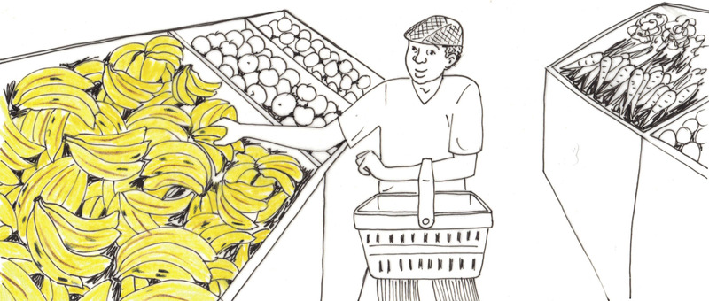

Processing food for emergency situations
In the previous chapter, you learnt about refugees and why large numbers of people can be forced to leave their homes and their countries. Usually, refugees have little or no possessions. They can also not carry enough food for a long period of time. In this chapter, you will learn how to process food for emergency situations. Processed foods last much longer than fresh foods and are ideal for refugee camps. You will write a design brief and plan an emergency meal that is nutritious and tasty. It should be possible to make this emergency meal in a refugee camp.

Figure 1: A refugee camp in Darfur, Sudan, in North Africa

Figure 2

Figure 3
Investigate types of food
When refugees travel to a host country, the people in the host country usually take care of them.
In the previous chapter, you looked at the mix of people and how this mix would change, depending on whether the emergency was caused by a natural disaster or a war.
The type of food refugees eat depends on the mix of the group. Children need more protein than older people, babies need special milk formulas, and old people need lots of vegetables to protect them from disease.
For homework, you had to think about types of food that are available in South Africa and that can feed a large group of people. The food had to be cheap, easy to find and nutritious.
Refugees do not expect expensive food, just enough healthy food. Bad nutrition can lead to problems like illness and disease. If refugees get weak or sick, they will not be able to look after themselves and the situation in the refugee camp will become worse.
Nutritious food
To remain healthy, the human body needs different types of food known as food groups. Meals that contain the right combination of the different food groups are called balanced meals. A balanced meal includes the following food groups:
- Carbohydrates: These provide energy and are found in starchy foods like potatoes, mealie meal, rice and bread.
- Protein: These build muscle and give us strength. Protein-rich foods include meat, fish, chicken, eggs, beans, cheese and milk.
- Fats and oils: These provide energy and help to protect our internal organs. They also help our bodies to fight disease. Foods in this food group include cheese, butter, margarine and oils such as sunflower or canola oil.
- Vitamins and minerals: These are found in all foods, but especially in fresh fruit and vegetables. They are very important for good health, strong bones and teeth, and to keep your brain working well. Vitamins also help to prevent disease. For example, Vitamin C, which is found in oranges and lemons, fights colds and flu.
Balanced diets
Have a look at the drawing below and see if you can tell which foods are high in carbohydrates, protein, fats and oils, and vitamins and minerals. Notice that similar types of foods are grouped together. Also notice that the groups are of similar size or "proportion". The drawing shows that we need to eat similar proportions of food from all of the five food groups every day to stay healthy.
You can think of nutrition as a wheel where each type of food is an important part.

Figure 4: A balanced diet consists of food from all five food groups every day.
Also remember that your body needs fresh, clean water to keep working and to digest and absorb the food you eat.
Figure 5: Drinking fresh, clean water is very important for your health.
For your homework in the previous chapter, you were asked to think about foods that are cheap and easy to find, and that are nutritious and easy to prepare.
- Work in pairs and compare your homework notes.
- Explain the reasons for your choices to each other. The main things to consider are the cost of the food, how easy it is to find, and how nutritious it is.
- Make a joint decision on what you would feed the refugees. If both of you have good ideas, you can suggest a combination of your dishes.

Figure 6: Bananas are very nutritious and they are cheap and plentiful in summer.
Figure 7: Oranges have lots of Vitamin C to help prevent colds and flu. They are cheap and widely available in winter.
Figure 8: Wheat is very nutritious.

Figure 9: Spinach grows quickly and is high in vitamins and minerals.
Questions about your investigation
1. What type of food did you choose? Write down why you chose it.
2. Did you think about the different age groups of the people in the camp? If you have chosen different foods for different age groups, explain why you did that.
3. Is there a lot of this food available to feed a large group? Write down why it should be easy to get enough of it for the camp.
4. Is the food nutritious? Write down why you think the food you have chosen will keep the refugees healthy.
5. Is it easy to prepare? Write down the reasons for your answer.
Investigate your refugee camp
A group of 100 refugees have settled near your community. You have been asked to feed them. Before you draw up your plans, the whole class has to make decisions about the issues below.
- What is the mix of the group? Divide them into four categories: babies, children, adults and old people. Complete the table below to help you with the next task.
The number of people of different ages in your group of 100 refugees
|
Age group |
Number of people in this age group |
|
Babies (1-5 years old) |
|
|
Children (6-15 years old) |
|
|
Adults (15-65 years old) |
|
|
Old people (older than 65 years) |
- Your group has not brought any food with them. Decide where you will find food to feed the people. How will you transport the food? How will you cook it?
- Is there a supply of clean water nearby? Why is water important for cleaning and cooking food? Discuss your answers with each other?
- Will the food be nutritious? Can you feed the people the same food every day until they can be resettled? Discuss your answers with each other.
Write down your decisions as you make them. Use the space below.
.3 write a design brief to feed your refugee camp
Before you can work out how much food you need for 100 people, work out how much food you need for one meal. The food needs to be nutritious, tasty and easy to find. It should include as many of the food groups as possible.
For each age group, list the ingredients and amounts you will need for one person. Use the tables below. One example has been done for you.
Amount of each ingredient needed to feed one baby
|
Ingredient |
Amount |
|
Samp |
One third of a cup (100 grams) |
Amount of each ingredient needed to feed one child
|
Ingredient |
Amount |
|
Samp |
Two thirds of a cup (200 grams) |
Amount of each ingredient needed to feed one adult
|
Ingredient |
Amount |
|
Samp |
1 cup (300 grams) |
Amount of each ingredient needed to feed one old person
|
Ingredient |
Amount |
|
Samp |
Half a cup (150 grams) |
Design a meal for 100 refugees
Once you have completed the tables above, each of you have to write a design brief to feed the 100 refugees. Your design brief should list your specifications. Specifications are the ingredients that you will need to make the meal.
You need to work out how much of each ingredient you need to make one nutritious meal for each age group. For example, this is how you would do the calculations.
For each ingredient, add the amount needed for each of the age groups
- One baby needs 100 grams of samp for one meal. Now multiply 100 grams by the number of babies in your group.
- One child needs 200 grams of samp for one meal. Now multiply 200 grams by the number of children in your group.
- One adult needs 300 grams of samp for one meal. Now multiply 300 grams by the number of adults in your group.
- One old person needs 150 grams of samp for one meal. Now multiply 150 grams by the number of old people in your group.
Example:
If there are 20 babies in your group, multiply 100 grams by 20. This gives you 2 000 grams, or 2 kilograms, of samp needed for all the babies for one meal.
If there are 30 children in your group, multiply 200 grams by 30. This gives you6 000 grams, or 6 kilograms, of samp needed for all the children for one meal.
If there are 40 adults in your group, multiply 300 grams by 40. This gives you12 000 grams, or 12 kilograms, of samp needed for all the adults for one meal.
If there are 10 old people in your group, multiply 150 grams by 10. This gives you 1 500 grams, or 1,5 kilograms, of samp needed for all the elderly people for one meal.
Now write the specifications for your design brief on the next page. Make two lists. In the first list, write all the ingredients that you need to make one nutritious meal for 100 refugees of different ages. In the second list, write the amounts of each ingredient you need.
Writing your design brief
|
Name of ingredient |
Amount of the ingredient needed |
Next week
Next week, you will prepare a meal according to your design brief. It will have to be tasty, nutritious, easy to find and easy to make in the refugee camp. You will taste and evaluate the meal yourselves, so think carefully about what you are going to prepare!